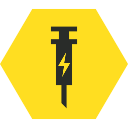
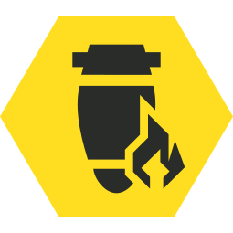

Boosters Tier List
Drag and drop boosters to create your own tier list
Tip: Click on a Tier to edit the name & use the color picker to change the color!
S Tier
A Tier
B Tier
C Tier
Booster Choices

Hellpod Space Optimization - Helldivers come out of the Hellpod fully stocked on Ammo, Grenades and Stims.

Vitality Enhancement - Provides minor damage reduction from all sources for all Helldivers

UAV Recon Booster - Increases all Helldivers' effective radar range.

Stamina Enhancement - Increases all Helldivers' stamina capacity and recovery.
Muscle Enhancement - Allows Helldivers to traverse difficult terrain with ease.
Increased Reinforcement Budget - Increases the number of available reinforcements.
Flexible Reinforcement Budget - Reduces time until new reinforcements are granted once they've been depleted.
Localization Confusion - Increases the time between enemy encounters.
Expert Extraction Pilot - Lowers the time it takes for the extraction shuttle to reach the extraction beacon.
Motivational Shocks - Allows all Helldivers to recover faster after being slowed by an attack, such as acid. Does not mitigate "area effects," such as EMS strikes.

Experimental Infusion - In addition to restoring health, Stims temporarily increase movement speed and damage reduction.

Firebomb Hellpods - Lines all Hellpods with volatile incendiaries that detonate upon impact, igniting any units in vicinity of the drop site.

Dead Sprint - Allows Helldivers to keep sprinting even when they are out of stamina, draining their health instead.
Armed Resupply Pods - Mounts a modified AR-23 Liberator to all resupply pods, allowing them to double as automatic turrets.
Sample Extricator - Large enemies now have a chance of dropping Samples on death. Capped at 10 drops per mission.